Scenario sheet
The 25 fixtures in internal/scenario/scenarios.json: what each one plugs in, and the command
that launches it. Compiled out of every build that is not -tags scenario, so none
of this is reachable from a shipped binary.
The cards are drawn by internal/cards, the same code the game blits — but
plain. A rider is printed as the word the file writes rather than painted onto
the face; what an upgrade looks like is the upgrade sheet's subject.
ASCEND_DUEL_SCENARIO=new-ring-art go run -tags scenario .
The six rings drawn on 2026-09-11, worn at once so the artwork can be read on the pane at the size a player sees it - Bulwark, Banker, Bedrock, Boxer, Brass Knuckles and Attuned. It is six rather than five because RingSlots is 6: the shipped cap is combat.DefaultRingSlots and a run cannot exceed it, so looking at a batch of art used to mean buying one, selling it and buying the next. The hand is five earth cards, which is four rings firing at once and one deliberately not: Attuned pays an Elemental Three of a Kind, Boxer doubles the Jab, Brass Knuckles doubles the Bash, and Bedrock reads whatever earth is left in hand - so playing three and keeping two is a different blow from playing all five. Banker is the one that says nothing here, because vitae propagates between fights. Against a dummy, so every combination can be tried; the budget is 15 AP so the choice is which cards rather than which are affordable.
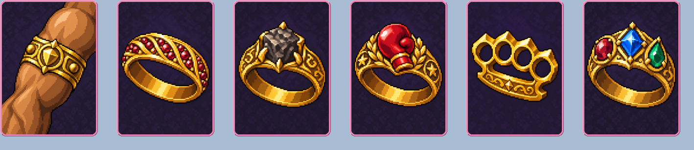
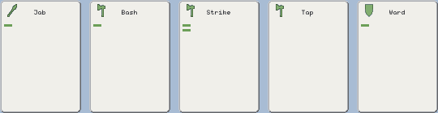
| Worn, in order | Ring | Says |
|---|---|---|
| bulwark-ring | Bulwark Ring | +25 HP for every fight. |
| banker-ring | Banker Ring | Vitae propagates twice as fast. |
| bedrock-ring | Bedrock Ring | Deals 5 more DMG for each earth card kept in hand. |
| boxer-ring | Boxer Ring | Every Jab deals double DMG. |
| brass-knuckles-ring | Brass Knuckles Ring | Every Bash deals double DMG. |
| element-three-of-a-kind-hand-ring | Attuned Ring | A Elemental Three of a Kind deals 3 more DMG before the multiplier. |
| Opening hand | Element | AP | Riders |
|---|---|---|---|
| Jab | earth | 1 | |
| Bash | earth | 1 | |
| Strike | earth | 2 | |
| Tap | earth | 0 | |
| Ward | earth | 1 |
ASCEND_DUEL_SCENARIO=arsenal-on-a-dummy go run -tags scenario .
The Arsenal Ring on the finger and a Form Four of a Kind in the opening hand, against a dummy that cannot die - so the ring fires on the first DUEL! and can be fired again every turn after it. The deck is nothing but stabs, written by go run ./tools/scenariodeck -form stab -size 40, so every refill deals another four-of-a-kind. The hand opens Poke, Jab, Thrust, Jab - four stabs, with a Ward beside them so the obvious play is the four rather than a five. The budget is 15 AP rather than the usual 6, so any four cards in the hand can be paid for and picking the set you want is the only decision - a turn is still five cards, which combat.MaxActions bounds and no fixture lifts. Watch the arithmetic panel: Arsenal adds 6 to the blow BEFORE the Form Four of a Kind multiplier, so the ring's term sits inside the sum rather than on the end of it, and the figure it moved is written in the ring pink. The ring pane is where the new artwork is.
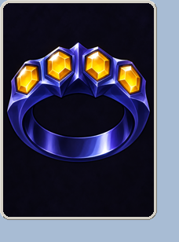
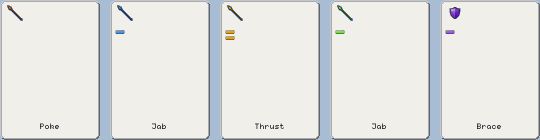
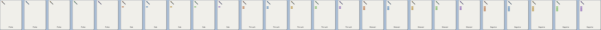
| Worn, in order | Ring | Says |
|---|---|---|
| form-four-of-a-kind-hand-ring | Arsenal Ring | A Form Four of a Kind deals 6 more DMG before the multiplier. |
| Opening hand | Element | AP | Riders |
|---|---|---|---|
| Poke | fire | 0 | |
| Jab | ice | 1 | |
| Thrust | lightning | 2 | |
| Jab | earth | 1 | |
| Ward | arcane | 1 |
| Deck — 40 cards | Element | Copies | AP | Riders |
|---|---|---|---|---|
| Poke | fire | 2 | 0 | |
| Poke | ice | 2 | 0 | |
| Poke | lightning | 2 | 0 | |
| Poke | earth | 2 | 0 | |
| Poke | arcane | 2 | 0 | |
| Jab | fire | 2 | 1 | |
| Jab | ice | 2 | 1 | |
| Jab | lightning | 2 | 1 | |
| Jab | earth | 2 | 1 | |
| Jab | arcane | 2 | 1 | |
| Thrust | fire | 2 | 2 | |
| Thrust | ice | 2 | 2 | |
| Thrust | lightning | 2 | 2 | |
| Thrust | earth | 2 | 2 | |
| Thrust | arcane | 2 | 2 | |
| Lunge | fire | 1 | 3 | |
| Lunge | ice | 1 | 3 | |
| Lunge | lightning | 1 | 3 | |
| Lunge | earth | 1 | 3 | |
| Lunge | arcane | 1 | 3 | |
| Impale | fire | 1 | 4 | |
| Impale | ice | 1 | 4 | |
| Impale | lightning | 1 | 4 | |
| Impale | earth | 1 | 4 | |
| Impale | arcane | 1 | 4 |
ASCEND_DUEL_SCENARIO=form-hand-rings go run -tags scenario .
The two new form-hand rings on the fingers, Armoury and Arsenal, so the artwork can be looked at on the ring pane and the rules can be made to fire in the same launch. The hand holds four stabs and two slashes, all of them cheap: take the four stabs for a Form Four of a Kind and Arsenal adds 6 before the multiplier, or take three stabs and both slashes for a Form Full House and Armoury adds 6. Both fit the 6 AP turn with room to spare, so the two can be compared on consecutive turns. Watch the arithmetic panel for the ring term, and the ring pane for whether the two pictures are tellable apart at the size they are drawn - they are two rings about the same axis, and the card carries no title.
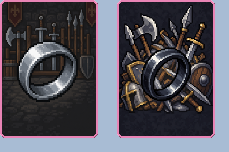
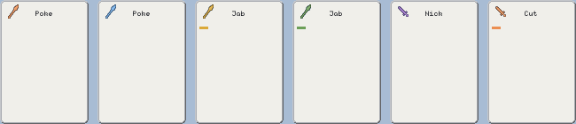
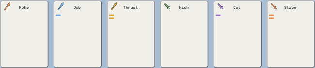
| Worn, in order | Ring | Says |
|---|---|---|
| form-full-house-hand-ring | Armoury Ring | A Form Full House deals 6 more DMG before the multiplier. |
| form-four-of-a-kind-hand-ring | Arsenal Ring | A Form Four of a Kind deals 6 more DMG before the multiplier. |
| Opening hand | Element | AP | Riders |
|---|---|---|---|
| Poke | fire | 0 | |
| Poke | ice | 0 | |
| Jab | lightning | 1 | |
| Jab | earth | 1 | |
| Nick | arcane | 0 | |
| Cut | fire | 1 |
| Deck — 32 cards | Element | Copies | AP | Riders |
|---|---|---|---|---|
| Poke | fire | 6 | 0 | |
| Jab | ice | 6 | 1 | |
| Thrust | lightning | 4 | 2 | |
| Nick | earth | 6 | 0 | |
| Cut | arcane | 6 | 1 | |
| Slice | fire | 4 | 2 |
ASCEND_DUEL_SCENARIO=training-dummy go run -tags scenario .
A fight that cannot end, on the real starting deck against whichever creature the climb dealt. Both duelists carry 999999 life and the clock is lifted to 999 rounds, so every blow, every shield break, every status and every signal can be played with for as long as it is interesting - the thing that is otherwise five rounds and a death away. The creature is a real record with a real portrait and a real deck, so it still swings back and the exchange still reads the way it reads in a run; what is gone is the ending. Add Rings, Deck or Parasites to this entry and it becomes a bench for whatever is being looked at. Note both health bars sit at a fraction nothing will visibly move, which is the mechanic rather than a broken bar.
ASCEND_DUEL_SCENARIO=one-form-deck go run -tags scenario .
A deck of nothing but slashes, against a dummy that cannot die, so a form-axis hand can be built over and over without a fight ending. Written by go run ./tools/scenariodeck -form slash -size 40 and pasted in literally, which is the whole argument for a generator over a filter vocabulary: what is in the file is the list, so it can be read and checked. Every rung of the form ladder up to Five of a Kind is reachable every turn here, which is the deal a real deck almost never gives you - so it is the bench for a form-hand ring, a stone on a form rung, or just watching what a Form Full House looks like when it lands. Swap the -form for stab or crush, or take the dummy off, and it is a different bench.
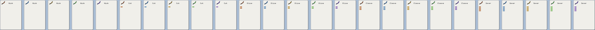
| Deck — 40 cards | Element | Copies | AP | Riders |
|---|---|---|---|---|
| Nick | fire | 2 | 0 | |
| Nick | ice | 2 | 0 | |
| Nick | lightning | 2 | 0 | |
| Nick | earth | 2 | 0 | |
| Nick | arcane | 2 | 0 | |
| Cut | fire | 2 | 1 | |
| Cut | ice | 2 | 1 | |
| Cut | lightning | 2 | 1 | |
| Cut | earth | 2 | 1 | |
| Cut | arcane | 2 | 1 | |
| Slice | fire | 2 | 2 | |
| Slice | ice | 2 | 2 | |
| Slice | lightning | 2 | 2 | |
| Slice | earth | 2 | 2 | |
| Slice | arcane | 2 | 2 | |
| Cleave | fire | 1 | 3 | |
| Cleave | ice | 1 | 3 | |
| Cleave | lightning | 1 | 3 | |
| Cleave | earth | 1 | 3 | |
| Cleave | arcane | 1 | 3 | |
| Sever | fire | 1 | 4 | |
| Sever | ice | 1 | 4 | |
| Sever | lightning | 1 | 4 | |
| Sever | earth | 1 | 4 | |
| Sever | arcane | 1 | 4 |
ASCEND_DUEL_SCENARIO=wildcards go run -tags scenario .
A deck the wildcard parasite has already been spent on, so the first thing on screen is an altered card rather than a shop three fights away. Half the deck is wild - a fire Jab, an ice Cut and an arcane Ward - and the other half is ordinary, in four colours that agree with nothing. Watch two things: the wash over the whole card, which is where an upgrade is said as of 2026-09-09, and the hand line, which names an elemental rung off a set of cards that share no colour at all. Note the form mark stays hueless on a wild card and keeps its element on every other upgrade. A Motley is in the bucket too, for spending on a card that is not wild yet.
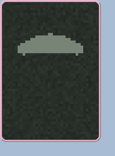

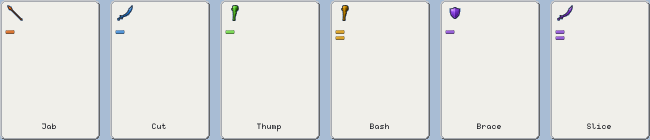
| Carried | Where | Says |
|---|---|---|
| motley | bucket | CARD IS EVERY ELEMENT |
| Opening hand | Element | AP | Riders |
|---|---|---|---|
| Jab | fire | 1 | wild-element |
| Cut | ice | 1 | wild-element |
| Bash | earth | 1 | |
| Strike | lightning | 2 | |
| Ward | arcane | 1 | wild-element |
| Slice | arcane | 2 |
| Deck — 24 cards | Element | Copies | AP | Riders |
|---|---|---|---|---|
| Jab | fire | 4 | 1 | wild-element |
| Cut | ice | 4 | 1 | wild-element |
| Bash | earth | 4 | 1 | |
| Strike | lightning | 4 | 2 | |
| Ward | arcane | 4 | 1 | wild-element |
| Slice | arcane | 4 | 2 |
ASCEND_DUEL_SCENARIO=metals go run -tags scenario .
The two gambling upgrades, already on cards, so the roll can be watched rather than bought towards. Four gold Jabs and four silver Cuts, with an ordinary Strike and Bash beside them for comparison; the opening hand holds one of each. Play the metals every turn and read the feed: gold announces +1 DMG or +5 max life on roughly two turns in five and the fighter card's stats move as it does, silver drops 10 into the purse on one in five. What to check is that a grant survives the round - the bonus lands on the run, so the next fight opens with it - and that a losing roll says nothing rather than saying nothing happened. A Golden and a Silver are in the bucket for putting one metal over the other, which is what last-one-wins looks like.

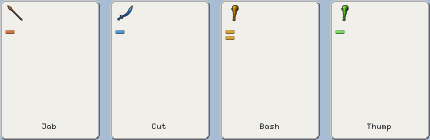

| Carried | Where | Says |
|---|---|---|
| golden | bucket | CARD IS GOLD 1 IN 5 ON PLAY: +1 DMG OR +5 LIFE |
| silver | bucket | CARD IS SILVER 1 IN 5 ON PLAY: +10 VITAE |
| Opening hand | Element | AP | Riders |
|---|---|---|---|
| Jab | fire | 1 | golden:5 |
| Cut | ice | 1 | silver:5 |
| Strike | lightning | 2 | |
| Bash | earth | 1 |
| Deck — 24 cards | Element | Copies | AP | Riders |
|---|---|---|---|---|
| Jab | fire | 8 | 1 | golden:5 |
| Cut | ice | 8 | 1 | silver:5 |
| Strike | lightning | 4 | 2 | |
| Bash | earth | 4 | 1 |
ASCEND_DUEL_SCENARIO=metal-chromatic go run -tags scenario .
A silver card and a chromatic one in the same hand, which neither the metals nor the wildcards entry can give you: the question is how the two upgrades read against each other on one table. The silver Cut writes nothing about its metal on the face at all - the sheen is what names it - where the wild Jab carries the five-band wash, keeps its form mark hueless, and says ANY ELEMENT. Both explain themselves in the tooltip and both are titled in their own ink: CHROMATIC letter by letter across the five bands, SILVER in one lifted grey over the odds it gambles at. Hover both, and check the silver card is identifiable without the hover. A gold Thrust and two plain cards are beside them so a sheen has something to be a sheen against. A Motley and a Silver are in the bucket for putting either upgrade onto a card that has neither.


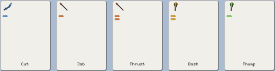
| Carried | Where | Says |
|---|---|---|
| motley | bucket | CARD IS EVERY ELEMENT |
| silver | bucket | CARD IS SILVER 1 IN 5 ON PLAY: +10 VITAE |
| Opening hand | Element | AP | Riders |
|---|---|---|---|
| Cut | ice | 1 | silver:5 |
| Jab | fire | 1 | wild-element |
| Thrust | fire | 2 | golden:5 |
| Strike | lightning | 2 | |
| Bash | earth | 1 |
| Deck — 28 cards | Element | Copies | AP | Riders |
|---|---|---|---|---|
| Cut | ice | 8 | 1 | silver:5 |
| Jab | fire | 8 | 1 | wild-element |
| Thrust | fire | 4 | 2 | golden:5 |
| Strike | lightning | 4 | 2 | |
| Bash | earth | 4 | 1 |
ASCEND_DUEL_SCENARIO=upgrades go run -tags scenario .
Every upgrade except the two metals, one to a card, filling the opening hand: heal, shield, damage-on-play, scale-in-combo, damage-in-hand, scale-in-hand, vitae-in-hand and the wildcard, in that order left to right. It exists to answer one question - are ten upgrades ten cards a player can tell apart at a glance, in a row, on the table rather than on a sheet. Eight of the colours are placeholders standing on a wheel that has no room left, so what to look for is the pairs that collide: the heal's rose against the ring pink, and the three cool held ones against each other. Note the wildcard is the only card whose form mark goes hueless. Run the metals scenario for gold and silver.
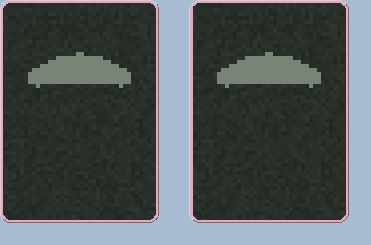
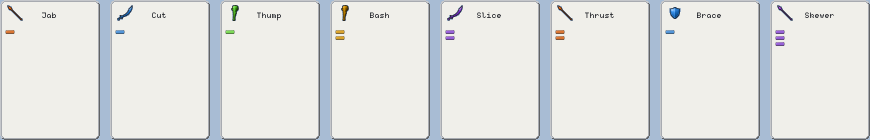

| Carried | Where | Says |
|---|---|---|
| motley | bucket | CARD IS EVERY ELEMENT |
| leech | bucket | +10 HEAL ON PLAY |
| Opening hand | Element | AP | Riders |
|---|---|---|---|
| Jab | fire | 1 | heal-on-play:10 |
| Cut | ice | 1 | shield-on-play:1 |
| Bash | earth | 1 | damage-on-play:10 |
| Strike | lightning | 2 | scale-in-combo:200 |
| Slice | arcane | 2 | damage-in-hand:10 |
| Thrust | fire | 2 | scale-in-hand:200 |
| Ward | ice | 1 | vitae-in-hand:3 |
| Lunge | arcane | 3 | wild-element |
| Deck — 32 cards | Element | Copies | AP | Riders |
|---|---|---|---|---|
| Jab | fire | 4 | 1 | heal-on-play:10 |
| Cut | ice | 4 | 1 | shield-on-play:1 |
| Bash | earth | 4 | 1 | damage-on-play:10 |
| Strike | lightning | 4 | 2 | scale-in-combo:200 |
| Slice | arcane | 4 | 2 | damage-in-hand:10 |
| Thrust | fire | 4 | 2 | scale-in-hand:200 |
| Ward | ice | 4 | 1 | vitae-in-hand:3 |
| Lunge | arcane | 4 | 3 | wild-element |
ASCEND_DUEL_SCENARIO=tutorial go run -tags scenario .
Bob, from the top, on the real starting deck. The seed and the opening creature are not here: they are in data/tutorial.json, because the lesson's promises - four cards of one colour, one of them a shield, a blow that wounds without killing so the creature swings back - are facts about that deal against that creature, and a second copy of them here is a second copy to drift. This entry now says only 'teach it whatever the profile thinks', which is the one thing the real trigger cannot do and the only way to see the tutorial twice.
ASCEND_DUEL_SCENARIO=reward-payout go run -tags scenario .
The reward screen with something to say: a purse big enough to earn interest, a fight won on 63 life, and the stairway's award. Watch the three sentences type and each figure fly to the duelist card.

| Worn, in order | Ring | Says |
|---|---|---|
| heart-ring | Heart Ring | +5 HP, and 5 more for every fight won. |
ASCEND_DUEL_SCENARIO=shop-shelf go run -tags scenario .
The shop with money to spend, two fingers already full, a parasite in the bucket and a wound to heal. Straight to the shelf without playing three duels to reach it, and hurt enough that a Salve is worth buying.
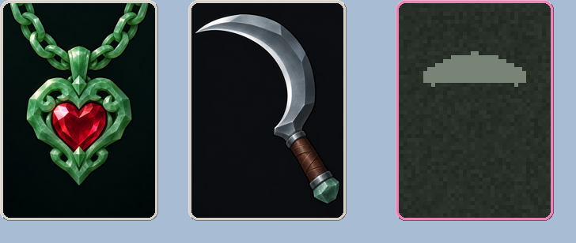
| Worn, in order | Ring | Says |
|---|---|---|
| heart-ring | Heart Ring | +5 HP, and 5 more for every fight won. |
| keen-ring | Keen Ring | Every slash card deals double DMG. |
| Carried | Where | Says |
|---|---|---|
| graft | bucket | LEFT CARD BECOMES RIGHT CARD |
ASCEND_DUEL_SCENARIO=stairway-boss go run -tags scenario .
A stairway protector on his own card: name, title, portrait and a deck out of bosses.json rather than the roster. The first stairway a run reaches is fight 2, which is where this opens.
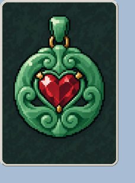
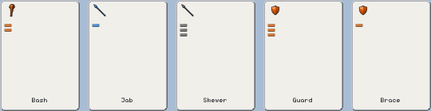
| Worn, in order | Ring | Says |
|---|---|---|
| heart-ring | Heart Ring | +5 HP, and 5 more for every fight won. |
| Opening hand | Element | AP | Riders |
|---|---|---|---|
| Strike | fire | 2 | |
| Jab | ice | 1 | |
| Lunge | basic | 3 | |
| Guard | fire | 3 | |
| Ward | fire | 1 |
ASCEND_DUEL_SCENARIO=echo-and-growth go run -tags scenario .
Does an echoed fire card grow Enflamed three times? Play the Lunge first: it leads the blow, so Echo seats it three times and Enflamed should step 0.3x rather than 0.1x.
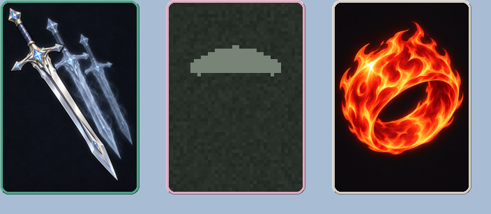
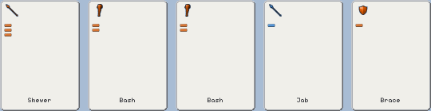
| Worn, in order | Ring | Says |
|---|---|---|
| echo-ring | Echo Ring | Your first attack lands 3 times: full DMG, then 2/3, then 1/3. |
| enflamed-ring | Enflamed Ring | Fire cards gain 0.1x DMG every time a fire attack lands. Grows while worn. |
| fire-ring | Fire Ring | Fire cards deal 2x DMG. |
| Opening hand | Element | AP | Riders |
|---|---|---|---|
| Lunge | fire | 3 | |
| Strike | fire | 2 | |
| Strike | fire | 2 | |
| Jab | ice | 1 | |
| Ward | fire | 1 |
ASCEND_DUEL_SCENARIO=seven-term-sum go run -tags scenario .
The widest sum the math box can be asked to draw: five cards, the lead one echoed twice. Watch whether the line shrinks and whether it is still readable.
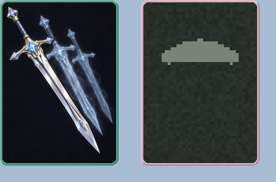
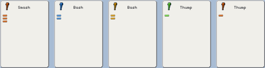
| Worn, in order | Ring | Says |
|---|---|---|
| echo-ring | Echo Ring | Your first attack lands 3 times: full DMG, then 2/3, then 1/3. |
| aftershock-ring | Aftershock Ring | Every crush card lands twice, both at full DMG. |
| Opening hand | Element | AP | Riders |
|---|---|---|---|
| Smash | fire | 3 | |
| Strike | ice | 2 | |
| Strike | lightning | 2 | |
| Bash | earth | 1 | |
| Bash | fire | 1 |
ASCEND_DUEL_SCENARIO=momentum-and-atrophy go run -tags scenario .
Atrophy deals the 3 AP attacks as 2 AP ones, so the whole hand fits a turn — and the Brace at the end of it is what resets Momentum, so the growth should climb 0.2x a round and then drop to nothing.
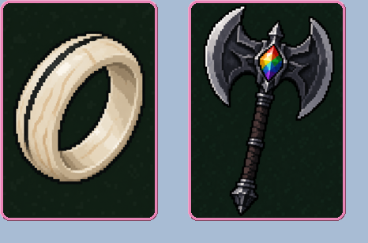
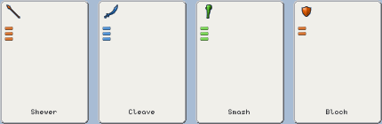
| Worn, in order | Ring | Says |
|---|---|---|
| atrophy-ring | Atrophy Ring | Every 3 AP attack is dealt as its 2 AP version. |
| momentum-ring | Momentum Ring | Every card gains 0.2x DMG each turn you raise no shields. A defend card resets it. |
| Opening hand | Element | AP | Riders |
|---|---|---|---|
| Lunge | fire | 3 | |
| Cleave | ice | 3 | |
| Smash | earth | 3 | |
| Brace | fire | 2 |
ASCEND_DUEL_SCENARIO=altered-deck go run -tags scenario .
Two flips and a demotion, so the deck panel's ALTERATIONS toggle has something to show. Open the draw pile: earth and lightning are dealt as fire, the 3 AP attacks are dealt a rung down, and AS OWNED puts all of it back. FULL/PLAYED after a round or two.
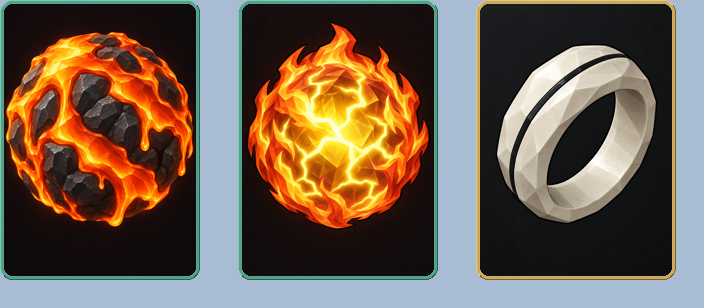
| Worn, in order | Ring | Says |
|---|---|---|
| magma-ring | Magma Ring | Every earth card is dealt as a fire card. |
| firestorm-ring | Firestorm Ring | Every lightning card is dealt as a fire card. |
| atrophy-ring | Atrophy Ring | Every 3 AP attack is dealt as its 2 AP version. |
ASCEND_DUEL_SCENARIO=bucket-of-parasites go run -tags scenario .
The board piece: a bucket holding one of each shape a parasite can take, clicked in the consumables pane on the top row - select the cards in the hand first, then click the parasite. It is here because a parasite is otherwise two screens away - bought from the shop shelf, then spent between the turns of the fight after it - so seeing the dialog at all meant playing to a shop and winning a room. Leech is the rider (a card that heals you as it is played, for the rest of the run), Gnaw eats two cards, Mimic copies one and the copy joins the hand you are holding, Effigy turns one into a Strike, Graft makes the first card you click into the second, and Hoard needs no target at all and so fires with nothing selected.
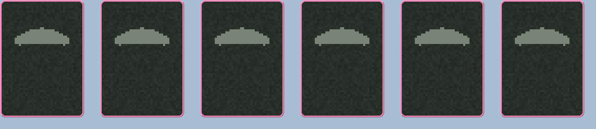
| Carried | Where | Says |
|---|---|---|
| leech | bucket | +10 HEAL ON PLAY |
| gnaw | bucket | 2 CARDS DESTROYED |
| mimic | bucket | COPY CARD |
| effigy | bucket | CARD BECOMES STRIKE |
| graft | bucket | LEFT CARD BECOMES RIGHT CARD |
| hoard | bucket | +20 VITAE |
ASCEND_DUEL_SCENARIO=held-back-riders go run -tags scenario .
The four riders that pay for a card you do NOT play, plus the two that pay for one you do. Attach Patience or Spite or Brood to a card, then leave that card in the hand and press DUEL! - the blow gets bigger, or the fight log says 'kept back for 3 vitae', on every turn you go on holding it. Hunger is the opposite question: it only pays if its card is one of the cards the hand was formed from, which a turn can play a card without doing. Carapace puts a Jab in the shield business. It is here because none of this is on a card face yet - the tooltip prose is the only readout, so the way to check the arithmetic is to hold the card and watch the sum.
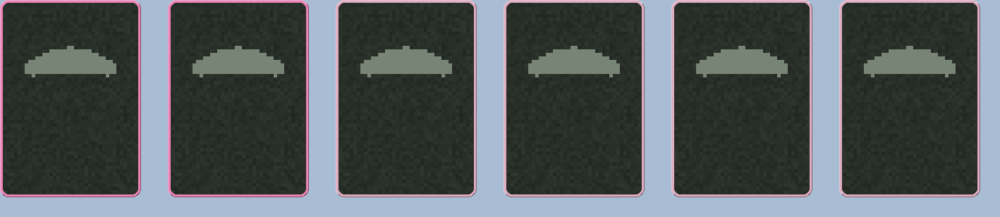
| Carried | Where | Says |
|---|---|---|
| patience | bucket | 2X DMG CARD IN HAND |
| spite | bucket | +10 DMG CARD IN HAND |
| brood | bucket | 3 VITAE CARD IN HAND |
| hunger | bucket | 2X DMG ON PLAY |
| carapace | bucket | 1 SHIELD ON PLAY |
| goad | bucket | +10 DMG ON PLAY |
ASCEND_DUEL_SCENARIO=element-and-form-borers go run -tags scenario .
The eight recolouring and reforming parasites, two cards each. The five bores paint a pair of cards an element; the three grubs change what a pair COUNTS AS on the form axis without changing the cards - so point Maulgrub at two Wards and you have two cards that still shield and now make a crush pair. That is a legal weird thing on the owner's call, not a hole in the checking. Watch the corner mark and the cost ticks for the recolour; watch the hands panel for the reform.
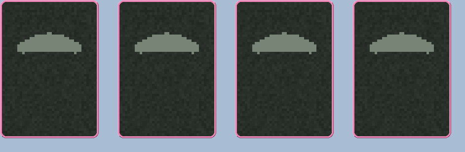
| Carried | Where | Says |
|---|---|---|
| emberbore | bucket | 2 CARDS BECOME FIRE |
| arcbore | bucket | 2 CARDS BECOME LIGHTNING |
| maulgrub | bucket | 2 CARDS BECOME CRUSH |
| thorngrub | bucket | 2 CARDS BECOME STAB |
ASCEND_DUEL_SCENARIO=rock-shower go run -tags scenario .
Three rock showers in the bucket. Each one needs no target, so it is taken on the click, and the panel stays up showing the three stones it just handed over - they go into the run's POUCH, not onto the ladder. Win the fight and the shop's S button is where they are spent: Use puts one on its rung, Sell pays 5. For the shop half on its own without the fight, see stones-in-the-pouch.
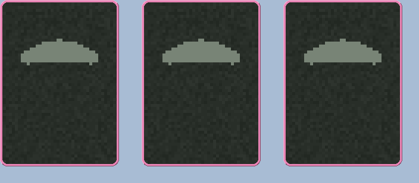
| Carried | Where | Says |
|---|---|---|
| rockbeetle | bucket | +2 STONES IN POUCH |
| rockbeetle | bucket | +2 STONES IN POUCH |
| rockbeetle | bucket | +2 STONES IN POUCH |
ASCEND_DUEL_SCENARIO=stones-in-the-pouch go run -tags scenario .
Opens on the shop carrying five stones, which is the other half of the rock shower. The S button in the corner beside D and C is the pouch; click a stone to arm it and two tabs hang under it - green Use puts it on its rung for the rest of the run, crimson Sell pays 5 vitae. The hands panel next door is where to check a Use actually moved the rung. It is here because a carried stone is otherwise a parasite bought, a fight won and a shower spent away.
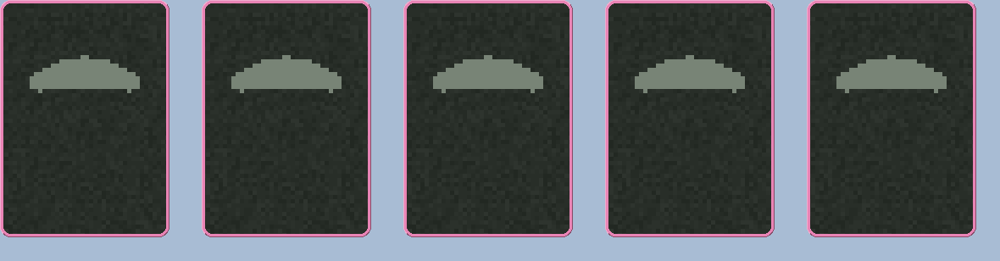
| Carried | Where | Says |
|---|---|---|
| agate | pouch | RAISE PAIR HAND |
| jasper | pouch | RAISE THREE OF A KIND HAND |
| onyx | pouch | RAISE FOUR OF A KIND HAND |
| flint | pouch | |
| garnet | pouch | RAISE ELEMENT FULL HOUSE |
ASCEND_DUEL_SCENARIO=achievement-toast go run -tags scenario .
Four cheap attacks across three forms and four elements, plus a defence: one turn that earns Spectrum, Weaponmaster and Arsenal at once, which is three toasts in a row and the only way to see the queue drain. Poke, Nick and Tap are 1 AP, so the whole thing fits the 6 AP turn. Elementalist is deliberately not reachable from this hand - five elements needs five attacks, and a turn holds five cards, so it and Arsenal cannot both land on one turn. The awards are written to the real profile; point ASCEND_DUEL_PROFILE at an empty directory to see them land again.
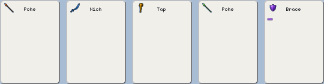
| Opening hand | Element | AP | Riders |
|---|---|---|---|
| Poke | fire | 0 | |
| Nick | ice | 0 | |
| Tap | lightning | 0 | |
| Poke | earth | 0 | |
| Ward | arcane | 1 |
ASCEND_DUEL_SCENARIO=luck-and-chimera go run -tags scenario .
A Luck and a Chimera in the bucket, which is the whole of it since the bucket holds two. Luck needs no target: click it and it rolls once - 1 in 5 for +1 DMG, 1 in 5 for +5 max life, 3 in 5 for nothing. Watch the duelist card's DMG and life bar, because a dud looks exactly like a click that did nothing and that is the mechanic rather than a bug. Then read the Chimera's face: it stops saying REPEAT LAST PARASITE and starts saying COPIES LUCK, and clicking it rolls again. Spend the Chimera FIRST to see the other half - with nothing spent yet it has nothing to copy and is drawn dim.

| Carried | Where | Says |
|---|---|---|
| luck | bucket | |
| chimera | bucket | REPEAT LAST PARASITE |
ASCEND_DUEL_SCENARIO=signals go run -tags scenario .
Every kind of card signal in one hand, so the fireworks can be looked at rather than played towards. The metals are at 5, the shipping odds - a gold Jab pays on two plays in five and a silver Cut on one in five, so several turns may be wanted; the heal Thrust and the two vitae-in-hand Slices fire on every single play, which is what makes the hand worth queueing even on a turn the metals miss. Certainty is not available and that is the design: combat.LuckOutcomes refuses a die with no losing face, because a gamble that always pays is a purchase. Queue the gold Jab, the silver Cut and the heal Thrust together and press DUEL!. The order is the thing to check: the two Slices left in the hand throw their crimson vitae first, together, and the sum does not begin until their figures have landed on the duelist card - then each played card bursts on the beat its own figure sets off into the sum, and every signal holds the sum where it is so nothing overlaps. The burst and the figure leave together, in one colour per card: gold for the gold Jab, silver for the silver Cut, the rose for the heal, crimson for the cards kept back. And a losing roll says nothing at all, which is the mechanic rather than a missing picture.
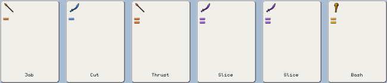
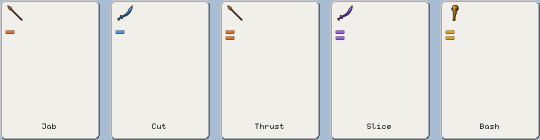
| Opening hand | Element | AP | Riders |
|---|---|---|---|
| Jab | fire | 1 | golden:5 |
| Cut | ice | 1 | silver:5 |
| Thrust | fire | 2 | heal-on-play:10 |
| Slice | arcane | 2 | vitae-in-hand:5 |
| Slice | arcane | 2 | vitae-in-hand:5 |
| Strike | lightning | 2 |
| Deck — 34 cards | Element | Copies | AP | Riders |
|---|---|---|---|---|
| Jab | fire | 8 | 1 | golden:5 |
| Cut | ice | 8 | 1 | silver:5 |
| Thrust | fire | 6 | 2 | heal-on-play:10 |
| Slice | arcane | 8 | 2 | vitae-in-hand:5 |
| Strike | lightning | 4 | 2 |